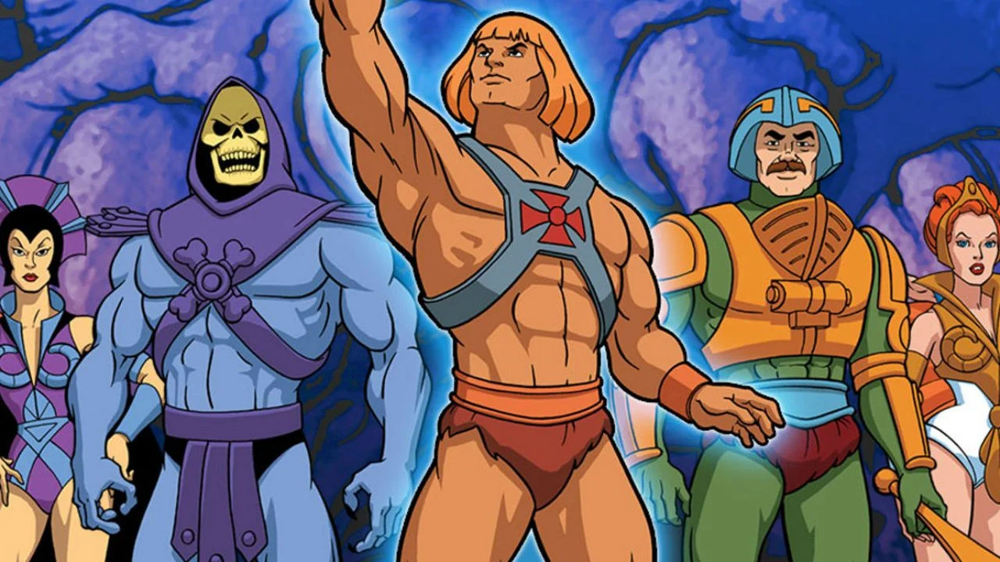
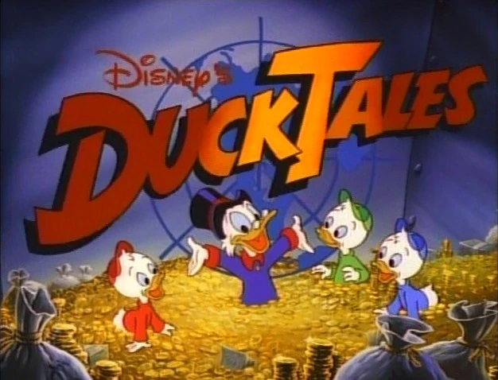
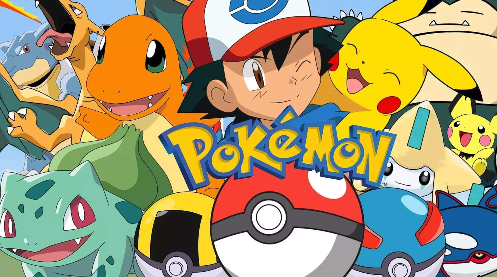

He-Man (1983)
O príncipe Adam se transforma em He-Man para proteger o Castelo de Grayskull das forças do mal lideradas por Esqueleto.

DuckTales (1987)
Tio Patinhas e seus sobrinhos embarcam em aventuras épicas cheias de mistério, tesouros e risadas inesquecíveis.

Dragon Ball Z (1989)
Goku e seus amigos enfrentam vilões poderosos em batalhas épicas para proteger a Terra e o universo.

Pokémon (1997)
Ash Ketchum e Pikachu viajam pelo mundo em busca de se tornarem Mestres Pokémon, enfrentando desafios e rivais.

Cavaleiros do Zodíaco (1986)
Seiya e os Cavaleiros de Bronze lutam em batalhas épicas para proteger a deusa Atena e salvar a humanidade.